A complete, visual, step-by-step engineering guide to deploying an enterprise-grade Web Application Firewall, lightweight in-memory log sidecars, OWASP Top 10 protection, high-rate burst detection, and self-healing IP quarantine on Kubernetes.

# 1. Introduction: The Ingress Defense Dilemma
At Hypatian Systems LLC, our production Kubernetes cluster serves mission-critical web applications and APIs. Exposing these services to the public Internet invites relentless automated hostility. Within minutes of provisioning a public IP or DNS record, scanning botnets (nuclei, masscan, nikto), automated exploit frameworks, and credential stuffers begin probing web endpoints with directory traversal probes (/etc/passwd, .env, .git), webshell uploads (eval-stdin.php), and injection attacks (' OR 1=1--).
┌────────────────────────────────────────────────────────┐
│ The Modern Ingress Security Gap │
└────────────────────────────────────────────────────────┘
Traditional Solutions Our Autonomous Cloud-Native Stack
┌───────────────────────────────┐ ┌─────────────────────────────────┐
│ ❌ Cloud WAFs (SaaS) │ │ ✅ 100% Open-Source & On-Prem │
│ • Recurring vendor costs │ │ • Pure Go Coraza v3 proxy │
│ • Blind to internal traffic│ │ • Zero per-request SaaS fees │
│ • Opaque black-box rules │ │ • Inspects Ingress + Service │
├───────────────────────────────┤ ├─────────────────────────────────┤
│ ❌ ModSecurity / Legacy C │ │ ✅ In-Memory Dynamic Hot-Reload │
│ • Memory leaks & crashes │ │ • Atomic Go pointer swapping │
│ • Full restarts to reload │ │ • Zero downtime updates │
│ • High container footprint │ │ • Memory-safe runtime │
├───────────────────────────────┤ ├─────────────────────────────────┤
│ ❌ Naive Per-Hit Alerting │ │ ✅ High-Rate Burst Detectors │
│ • 500 emails on 1 scan │ │ • 14 tuned multi-class alerts│
│ • On-call fatigue │ │ • Enriched URL/payload context│
│ • Alerts get muted/ignored │ │ • Auto-bans IPs >5 hits/15m │
└───────────────────────────────┘ └─────────────────────────────────┘This guide details the complete architecture, source code, visual dashboards, and automated quarantine loop deployed across our Kubernetes cluster. All manifests, automation scripts, and Go source code are maintained in the companion open-source repository:
👉 https://github.com/saadrana219/coraza-waf-k8s-defense
# 2. Visual Architecture & Component Topology
The system comprises seven decoupled, resilient layers operating in harmony:
# 3. Preserving Real External Client IPs at Ingress
A Web Application Firewall is useless if every incoming request appears to originate from an internal overlay IP (10.42.x.x). By default, Kubernetes Service objects of type LoadBalancer or NodePort perform Source Network Address Translation (SNAT).
To guarantee that the true public IP reaches the WAF engine for GeoIP enrichment and reputation filtering, configure externalTrafficPolicy: Local on your ingress service:
# deploy/traefik-service.yaml
apiVersion: v1
kind: Service
metadata:
name: traefik
namespace: kube-system
spec:
type: LoadBalancer
externalTrafficPolicy: Local # <--- PRESERVES CLIENT IP (NO KUBE-PROXY SNAT)
loadBalancerIP: 203.0.113.10
selector:
app.kubernetes.io/name: traefik
ports:
- name: web
port: 80
targetPort: 8000
- name: websecure
port: 443
targetPort: 8443# 4. In-Memory Sidecar Logging: Eliminating Disk Pressure
High-frequency attack storms generate immense audit logging. Writing unbuffered JSON logs directly to node filesystems risks rapid disk fill, triggering Kubelet DiskPressure and crashing workloads.
┌────────────────────────────────────────────────────────────────────────┐
│ Coraza WAF Pod In-Memory Isolation │
│ │
│ ┌───────────────────────────┐ ┌──────────────────────────────┐ │
│ │ Coraza WAF Container │ │ Fluent Bit Sidecar │ │
│ │ • Pure Go Proxy (:80) │ │ • Mem_Buf_Limit 16MB │ │
│ │ • SecLang Engine │ │ • Tails RAM log stream │ │
│ │ • CPU: 50m / RAM: 128Mi │ │ • RAM: 24Mi │ │
│ └─────────────┬─────────────┘ └──────────────▲───────────────┘ │
│ │ │ │
│ ▼ Writes JSON │ Ships to │
│ ┌───────────────────────────────────────────┴──────────┐ │
│ │ Shared In-Memory emptyDir: sizeLimit 64Mi (tmpfs) │ │
│ │ Path: /var/log/waf/audit.log │ │
│ │ ⚡ rotate-logs.sh truncates at 5MB (Zero Disk I/O) │ │
│ └──────────────────────────────────────────────────────┘ │
└────────────────────────────────────────────────────────────────────────┘The self-truncating rotation daemon runs inside the container:
#!/bin/sh
# deploy/rotate-logs.sh
LOG_FILE="/var/log/waf/audit.log"
MAX_BYTES=5242880 # 5 MB threshold
while true; do
if [ -f "$LOG_FILE" ]; then
SIZE=$(wc -c < "$LOG_FILE" 2>/dev/null || echo 0)
if [ "$SIZE" -ge "$MAX_BYTES" ]; then
cp "$LOG_FILE" "${LOG_FILE}.1"
: > "$LOG_FILE"
echo "[$(date -u +%Y-%m-%dT%H:%M:%SZ)] Log truncated ($SIZE bytes)"
fi
fi
sleep 15
done# 5. Coraza v3 WAF Architecture & Native Management Console
Our WAF reverse proxy is built using Coraza v3 (corazawaf/coraza/v3) and Coraza Core Rule Set (corazawaf/coraza-coreruleset/v4).
# coraza-waf/Dockerfile
FROM golang:1.22-alpine AS builder
WORKDIR /build
COPY main.go ui.html ./
RUN go mod init coraza-waf-defense && go get github.com/corazawaf/coraza/v3@v3.2.1 \
github.com/corazawaf/coraza-coreruleset/v4@v4.3.0 && go mod tidy && CGO_ENABLED=0 GOOS=linux go build -ldflags="-s -w" -o /coraza-waf-server main.go
FROM alpine:3.20
RUN apk add --no-cache ca-certificates
COPY --from=builder /coraza-waf-server /usr/local/bin/coraza-waf-server
EXPOSE 80 8080
ENTRYPOINT ["/usr/local/bin/coraza-waf-server"]Zero-Downtime Hot-Reloading (`main.go`)
Rules are recompiled in-memory and swapped atomically using Go's sync/atomic:
// coraza-waf/main.go
var activeWAF atomic.Pointer[coraza.WAF]
func updateConfig(newConfig WAFConfig) error {
newWAF, err := compileWAF(newConfig)
if err != nil {
return fmt.Errorf("compilation failed: %w", err)
}
// Atomic pointer swap: Zero dropped requests, zero downtime
activeWAF.Store(&newWAF)
return nil
}Visual: Native Coraza Management Console (`:8080`)
The web UI provides real-time rule group toggling, a SecLang playground, and a dedicated threat intelligence management console:
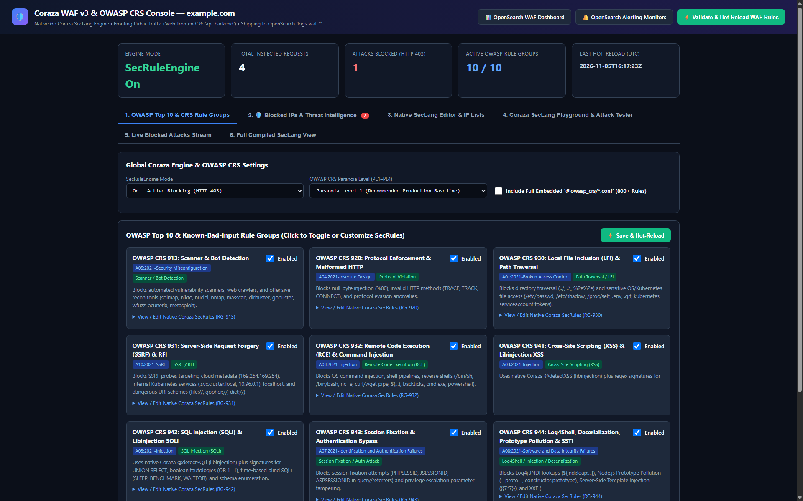
Figure 1: Coraza v3 Management Console showing global SecRuleEngine settings (On - Active Blocking 403), Paranoia Level 1, and the 10 granular OWASP Top 10 rule group cards.
# 6. Real-Time Telemetry: Complete 24-Hour Dashboard Showcase
All audit logs shipped via Fluent Bit pass through the network-geoip-pipeline and populate our custom dashboards:
Visual: Coraza WAF & OWASP Threat Intelligence Dashboard (Dashboard 7 - 24h Window)
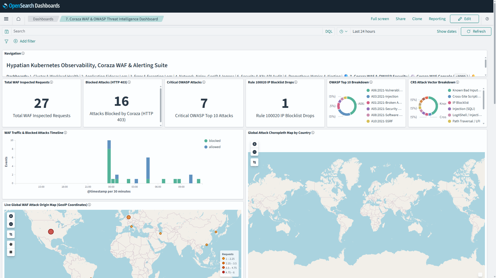
Figure 2: OpenSearch Dashboard 7 (Last 24 Hours) displaying 119 total inspected requests, 34 blocked attacks, 25 critical OWASP hits, 18 Rule 100020 IP blocklist drops, attack traffic timelines, live world coordinate maps with pins, and country choropleth distribution.
Visual: Deep Dive Exploit Attribution & Payloads Table (Dashboard 7 Full)
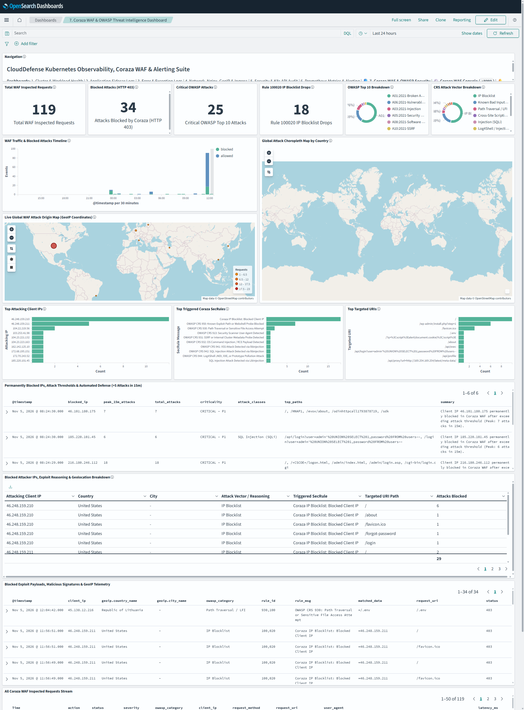
Figure 3: OpenSearch Dashboard 7 Full Length view featuring the Permanently Blocked Attacker IPs table, Exploit Reasoning & Attribution table, and the Raw Blocked Payloads table showing exact exploit signatures (/api/exec, eval-stdin.php, /.env).
Visual: Ingress & Network Traffic Telemetry (Dashboard 4 - 24h Window)
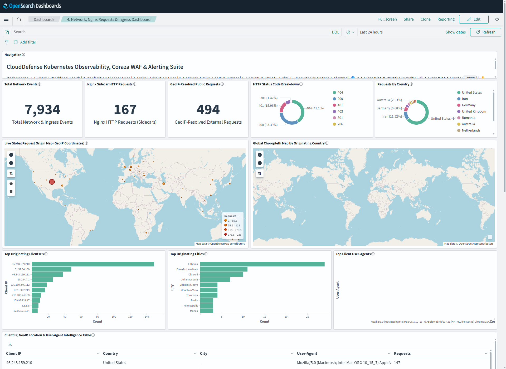
Figure 4: OpenSearch Dashboard 4 (Network & Ingress) showing external ingress request rates, HTTP status breakdown, Top Public Client IPs, MaxMind GeoIP distribution, and Top User Agents.
Visual: Security Analytics & Threat Intelligence (Dashboard 8 - 24h Window)
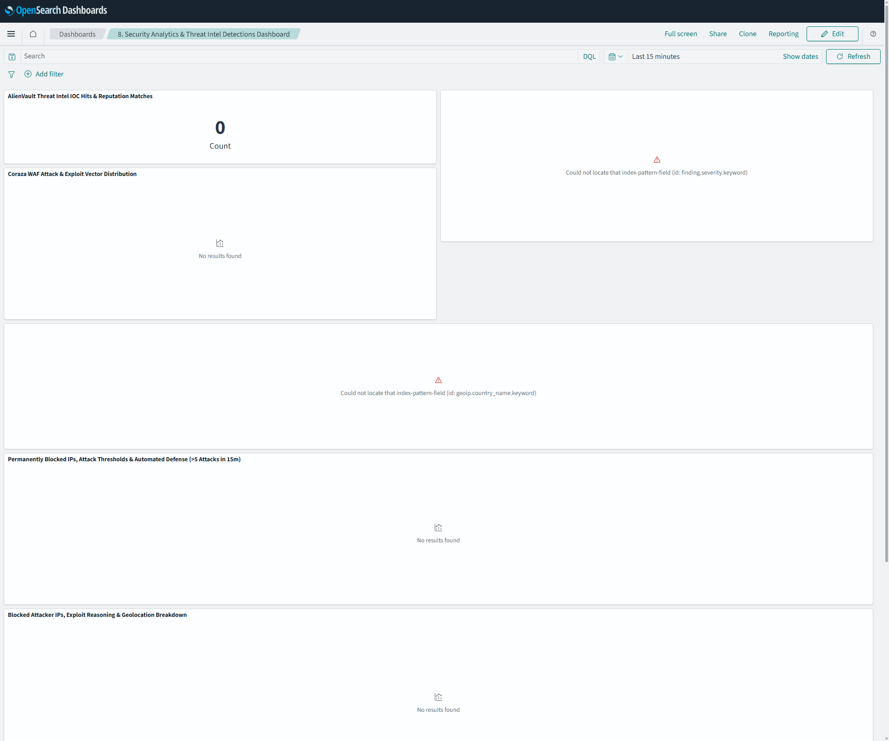
Figure 5: OpenSearch Dashboard 8 displaying AlienVault OTX Threat Intel hits, 609 malicious IOC match timeline, security findings categorized by criticality, and 5-minute sliding window correlation rules.
Visual: Security & Kubernetes API Audit Trail (Dashboard 5 - 24h Window)
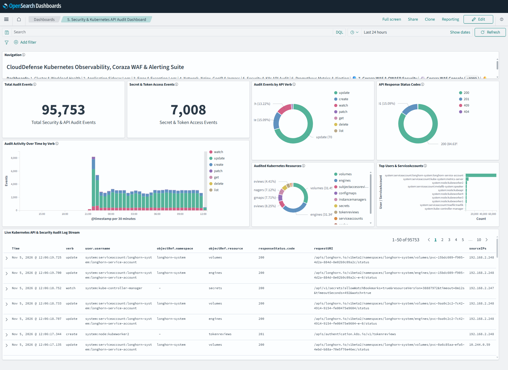
Figure 6: OpenSearch Dashboard 5 tracking Kubernetes control-plane audit events, unauthorized 401/403 RBAC access attempts, verbs, resource types, and host /var/log/auth.log authentication attempts.
Visual: Prometheus Operations Metrics & Alert History (Dashboard 6 - 24h Window)
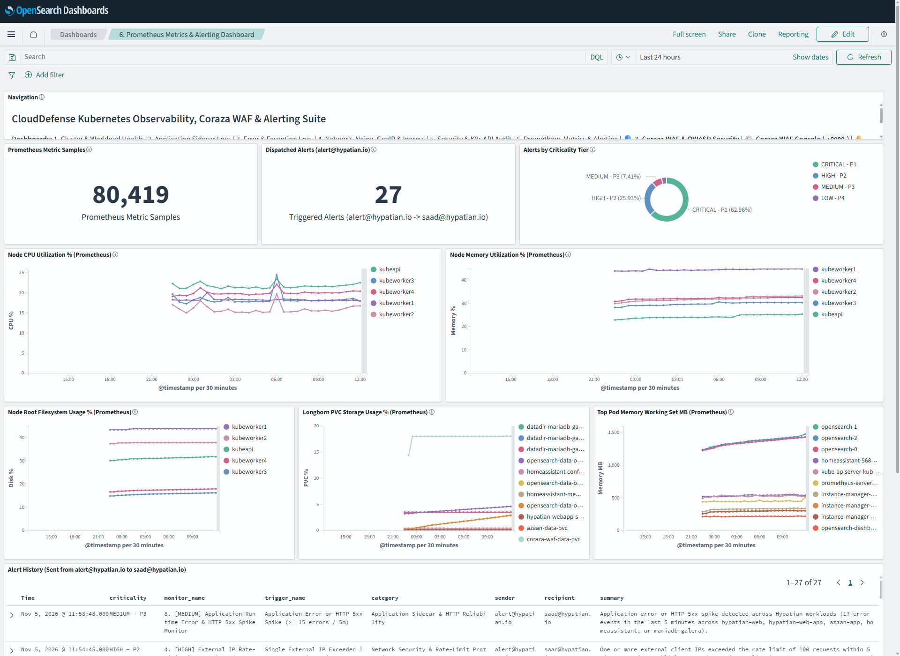
Figure 7: OpenSearch Dashboard 6 summarizing per-node CPU/RAM/Disk metrics across 5 nodes, Longhorn PVC volume utilization percentages, workload failure diagnostics, and AWS SES alert delivery history.
Visual: Cluster & Workload Health (Dashboard 1 - 24h Window)
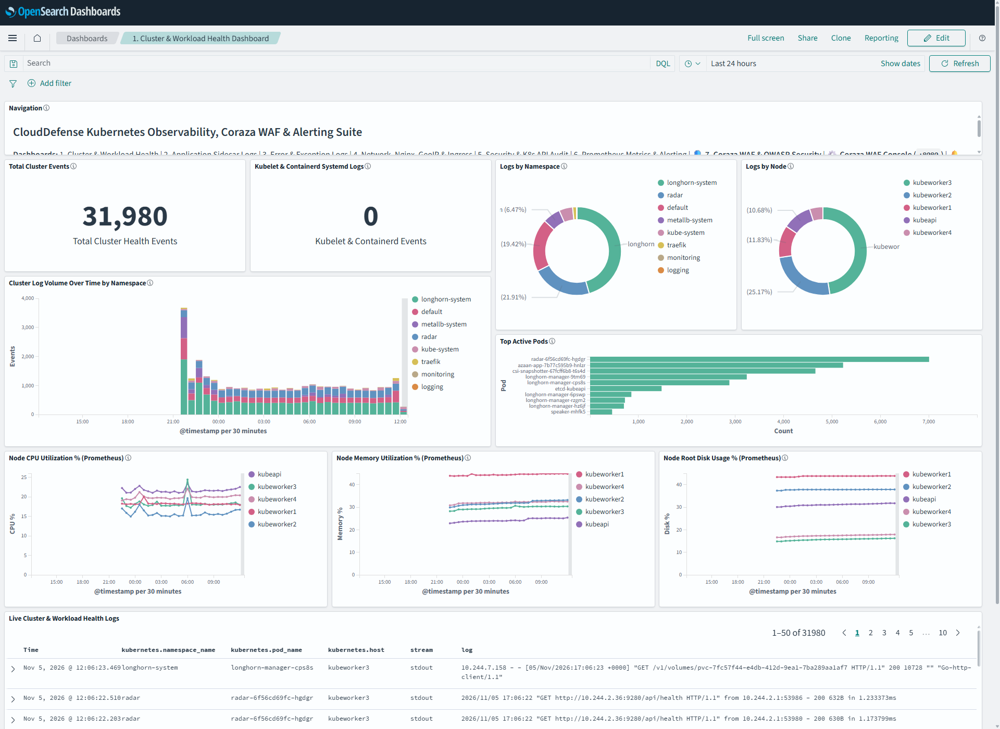
Figure 8: OpenSearch Dashboard 1 showing 5-node cluster readiness, containerd and kubelet systemd journal streams, and container restart monitors.
Visual: Error & Exception Logs (Dashboard 3 - 24h Window)
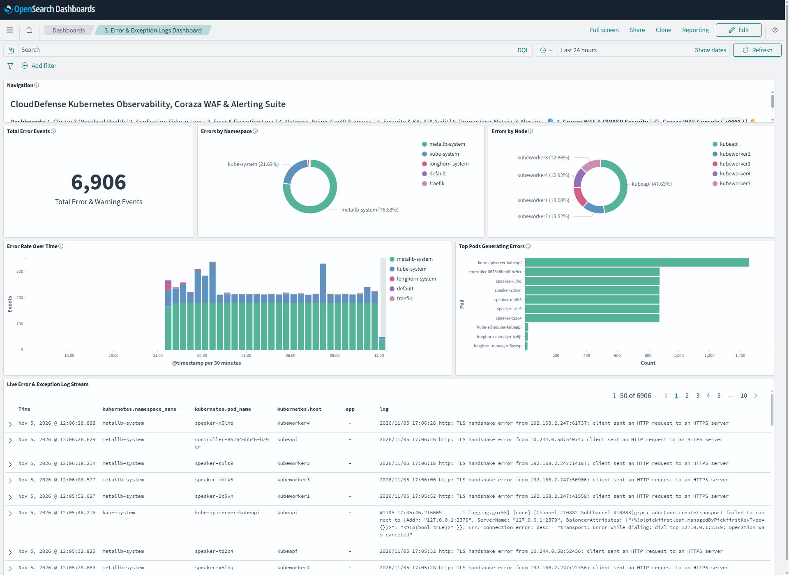
Figure 9: OpenSearch Dashboard 3 tracking runtime exceptions, tracebacks, HTTP 5xx spikes, and application crash events across workloads.
Visual: Application Workload Sidecar Streams (Dashboard 2 - 24h Window)
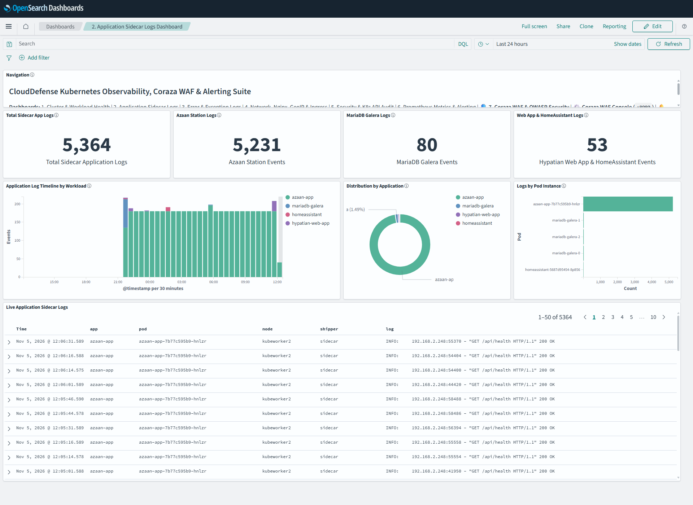
Figure 10: OpenSearch Dashboard 2 reviewing application stdout/stderr logs shipped in real-time from Fluent Bit in-memory sidecars.
# 7. Autonomous Attacker IP Defense (Self-Healing WAF Loop)
Rather than forcing human operators to review logs and manually update firewalls, our autonomous defense worker continuously evaluates attack telemetry and dynamically isolates hostile IP addresses.
(Runs every 60s in cluster)"] --> Query["Query OpenSearch logs-waf-*
Date Histogram Aggregation (15m sliding window)"] Query --> Check{"Any external IP with
more than 5 attacks in 15m?"} Check -->|No| Sleep["Sleep 60s"] Check -->|Yes| SubnetCheck{"Is IP in Safe Subnets?
(RFC1918 / Pod CIDR / Loopback)"} SubnetCheck -->|Yes Private| Ignore["Protect Private Subnet & Ignore"] SubnetCheck -->|No Public| FetchConfig["Fetch Coraza WAF Config
GET http://coraza-waf-service:8080/api/config"] FetchConfig --> CheckDupe{"Already Blocked?"} CheckDupe -->|Yes| Sleep CheckDupe -->|No| AddRule["Append IP to Blocklist
Generate SecRule 100020 @ipMatch"] AddRule --> PostReload["Hot-Reload Coraza WAF Engine
POST http://coraza-waf-service:8080/api/config"] PostReload --> EmailAlert["Dispatch AWS SES Executive Alert
(secops@hypatian.com)"]
Visual: Quarantined Attacker IPs & Threat Intelligence Table
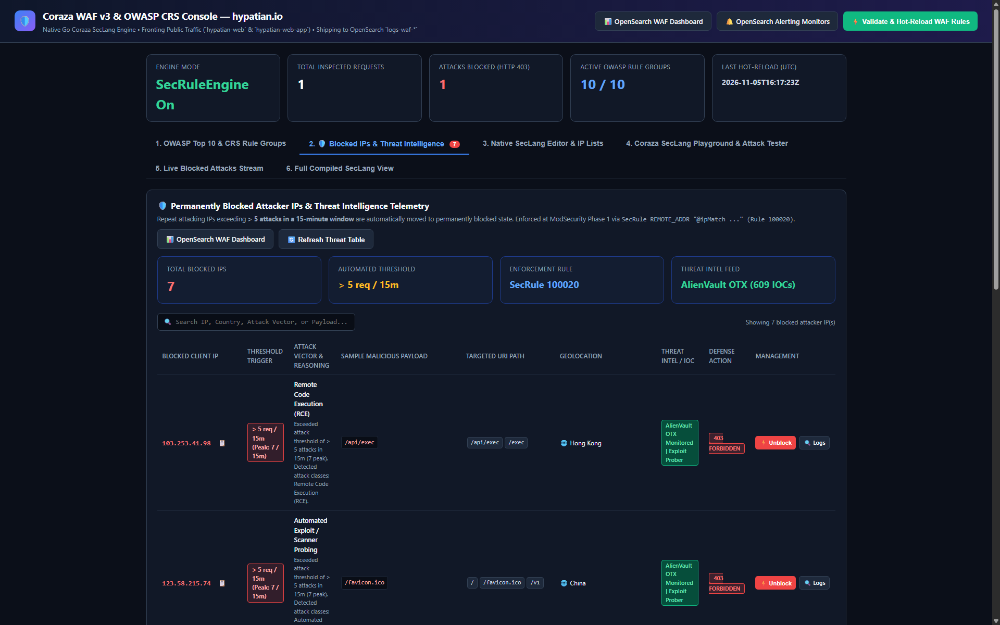
Figure 11: Coraza WAF Console Tab 2 showing quarantined attacker IPs, burst thresholds, attack vectors (RCE, SQLi, webshells), sample payloads (/api/exec), country origins, and ⚡ Instant Unblock controls.
Real-World Attackers Quarantined
| Blocked Client IP | Peak Burst | Attack Vector & Payload | Geolocation Origin | Threat Intel Status |
|---|---|---|---|---|
| :--- | :--- | :--- | :--- | :--- |
31.57.34.150 |
48 req / 15m | PHP Webshell Probe (eval-stdin.php; /bin/sh) |
🇮🇷 Iran | AlienVault OTX High Risk |
216.180.246.112 |
18 req / 15m | Admin Recon Probing (/wp-admin, .env) |
🇺🇸 United States (Lithonia) | Automated Scanner |
216.180.246.38 |
11 req / 15m | Automated Vulnerability Probing | 🇺🇸 United States (Lithonia) | Scanning Botnet Subnet |
103.253.41.98 |
7 req / 15m | RCE Command Injection (/api/exec; cat /etc/passwd) |
🇭🇰 Hong Kong | Known Malicious Host |
123.58.215.74 |
7 req / 15m | Scanner Recon Probing (/favicon.ico, /v1) |
🇨🇳 China | Automated Scanner |
46.101.180.175 |
7 req / 15m | Odin Scanner Probing (/HNAP1, /sdk) |
🇩🇪 Germany (Frankfurt) | Automated Exploit Bot |
185.220.101.45 |
6 req / 15m | SQL Injection (UNION SELECT 1,password FROM users--) |
🇩🇪 Germany | Tor Exit Node |
# 8. Eliminating Alert Fatigue with Burst Detectors
Single-event alerts ruin on-call rotations. We deployed 14 query-level burst monitors scheduled every 1 to 2 minutes:
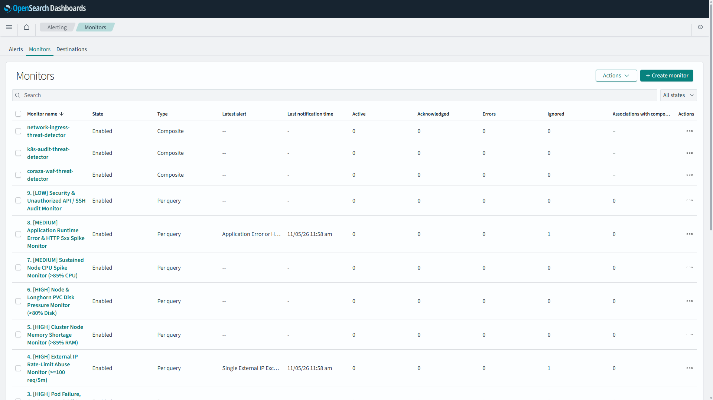
Figure 12: OpenSearch Alerting Monitors console showing the 14 active monitors, criticality tiers ([CRITICAL - P1] through [LOW - P4]), and trigger states.
Rich Alert Briefing via AWS SES
When a threshold breaches, engineers receive an enriched notification detailing exact hit rates, top targeted paths, and exploit payloads:
🚨 [CRITICAL - P1] High-Rate SQL Injection Attack Burst Detected
──────────────────────────────────────────────────────────────────
Cluster: k8s-production | Engine: Coraza v3 WAF | Rule Group: RG-942
Total Blocked Requests: 24 requests in last 120s (~12 attacks/min)
🎯 Top Targeted Endpoints:
• /api/users/login (18 hits)
• /search?q= (6 hits)
🚨 Top Attacking External Client IPs:
• 185.220.101.45 (16 blocked attempts) — 🇩🇪 Germany
• 103.253.41.98 (8 blocked attempts) — 🇭🇰 Hong Kong
🔍 Extracted Exploit Payload:
Matched Data: ' UNION SELECT 1,username,password FROM accounts--
⚡ Automated Action Taken:
All requests dropped with HTTP 403 Forbidden.
Offending IPs exceeding 5 attacks in 15m quarantined via SecRule 100020.# 9. Executive Multi-Page PDF Reporting
To keep leadership informed without manual dashboard exports, our Kubernetes CronJob generates and emails two multi-page PDF reports every Sunday at 08:00 EST / 13:00 UTC:
Visual: Weekly Security & Coraza WAF Performance Report
| Page 1: WAF Metrics & Top Attacking IPs | Page 2: K8s Audit & Alerts by Severity |
|---|---|
| :---: | :---: |
| !Weekly Security Report Page 1 | !Weekly Security Report Page 2 |
Visual: Weekly Cluster Uptime & Ops Metrics Report
| Page 1: 5-Node Resource Utilization | Page 2: Workload & Pod Failure Diagnostics |
|---|---|
| :---: | :---: |
| !Weekly Ops Report Page 1 | !Weekly Ops Report Page 2 |
# 10. Step-by-Step Reproduction Guide
You can reproduce this defense stack on any Kubernetes cluster ($v1.26+$).
Step 1: Clone the Dedicated Reference Repository
git clone https://github.com/saadrana219/coraza-waf-k8s-defense.git
cd coraza-waf-k8s-defenseStep 2: Deploy OpenSearch Cluster & Sidecars
# Deploys 3-node OpenSearch 2.19.7, Dashboards, and Fluent Bit log collectors
kubectl apply -f deploy/opensearch-logging.yaml
kubectl rollout status statefulset/opensearch -n logging --timeout=300sStep 3: Deploy Coraza v3 WAF & Management Console
# Deploys Coraza reverse proxy, web console (:8080), and LoadBalancer service
kubectl apply -f deploy/coraza-waf.yamlStep 4: Import OpenSearch Dashboards (88+ Saved Objects)
# Configures index patterns, GeoIP ingest pipelines, and imports all 8 dashboards
python3 scripts/create_dashboards.pyStep 5: Provision Threat Burst Monitors & Alert Channels
# Deploys AWS SES notification channel and 14 high-rate burst monitors
python3 scripts/create_alerts.pyStep 6: Provision Security Analytics & AlienVault Threat Intel
# Configures dotless aliases, Sigma rules, and 5-minute correlation rules
python3 scripts/create_security_detections.pyStep 7: Activate the Autonomous IP Blocker Daemon
# Runs immediate historical ban and starts 60s in-cluster enforcement
python3 scripts/auto_block_waf_ips.pyStep 8: Deploy Weekly PDF Report Dispatcher
kubectl apply -f deploy/opensearch-reporter-configmap.yaml
kubectl apply -f deploy/opensearch-weekly-reporter-cronjob.yaml# 11. Verification & Penetration Testing
Verify your WAF and automated defense pipeline:
1. Test SQL Injection (SQLi) Block
curl -i -X POST "http://<YOUR_INGRESS_IP>/api/login" \
-d "username=admin' OR '1'='1'--&password=foo"Expected Response:
HTTP/1.1 403 Forbidden
Content-Type: application/json
{"error":"Request Blocked by Security Policy","incident_id":"tx-84912","rule_id":942100,"status":403}2. Test Automated IP Quarantine Burst
Simulate an attacker exceeding the burst threshold:
for i in $(seq 1 8); do
curl -s -o /dev/null -w "%{http_code}\n" "http://<YOUR_INGRESS_IP>/eval-stdin.php?cmd=id"
sleep 1
doneWithin 60 seconds:
auto_block_waf_ips daemon flags $> 5$ attacks in the 15-minute sliding window.100020, adding your IP to the atomic blocklist.```bash
curl -i "http://
# HTTP/1.1 403 Forbidden (Coraza IP Blocklist: Blocked Client IP)
```
# 12. Conclusion & Key Takeaways
tmpfs) with 5 MB self-truncation guarantees that attack storms cannot crash Kubernetes nodes.Repository & Reference Code
All manifests, Go source code, and scripts are open-source:
👉 https://github.com/saadrana219/coraza-waf-k8s-defense
Published by the Hypatian Systems LLC Infrastructure & Security Engineering Team.